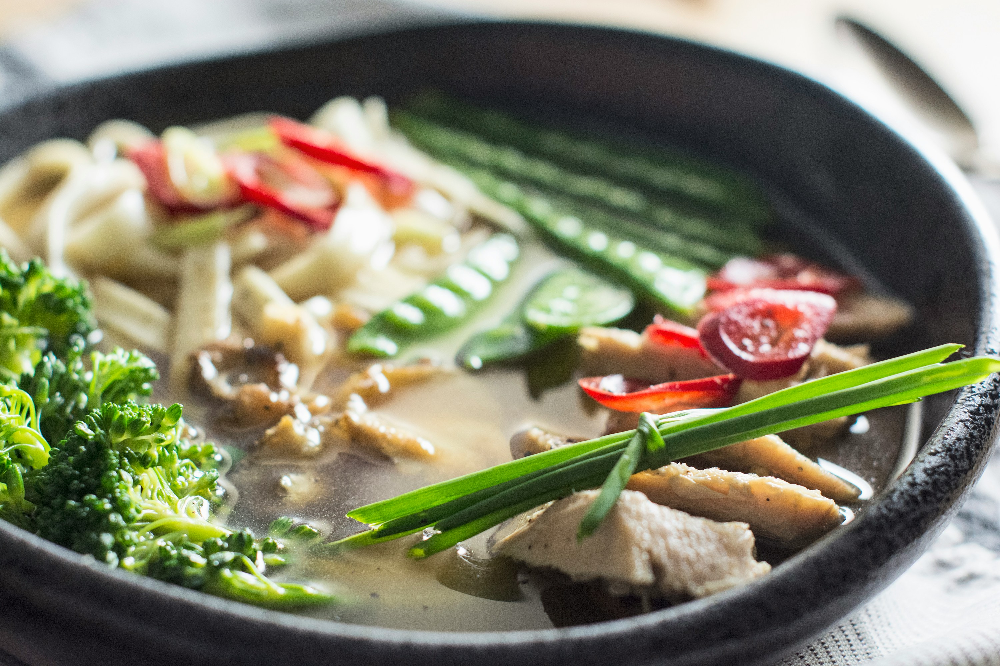

Chicken Noodle Soup

Photo by Stacey Doyle on Unsplash
"Classic chicken noodle soup that will leave you feeling so good, so warm, so cozy. Perfect for sick days and cold nights!!!" *
This simple chicken noodle soup recipe will fill you up with joy and happiness! The recipe will yield 8 servings. It will take 20 minutes to prep and 50 minutes to cook.
Ingredients
- 2 tablespoons unsalted butter
- 1 onion, diced
- 2 carrots, peeled and diced
- 2 ribs celery, diced
- 3 cloves garlic, minced
- 8 cups chicken stock
- 2 bay leaves
- Kosher salt freshly ground black pepper, to taste
- 2 ½ pounds bone-in, skinless chicken breasts
- 2 ½ cups wide egg noodles
- ¼ cup freshly grated Parmesan
- 2 tablespoons chopped fresh parsley leaves
- 2 tablespoons chopped fresh dill
- 1 tablespoon freshly squeezed lemon juice, or more, to taste
Steps
- Melt butter in a large stockpot or Dutch oven over medium heat. Add onion, carrots and celery. Cook, stirring occasionally, until tender, about 3-4 minutes.
- Stir in garlic until fragrant, about 1 minute.
- Stir in chicken stock and bay leaves; season with salt and pepper, to taste.
- Add chicken and bring to boil; reduce heat and simmer, covered, until the chicken is cooked through, about 30-40 minutes. Remove chicken and let cool before dicing into bite-size pieces, discarding bones.
- Stir in chicken and pasta and cook until tender, about 6-7 minutes.
- Remove from heat; stir in parsley, dill and lemon juice; season with salt and pepper, to taste.
- Serve immediately.
* This recipe and its descriptive content is fully sourced from Damn Delicious.